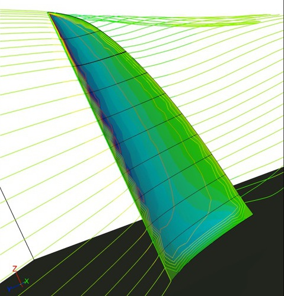
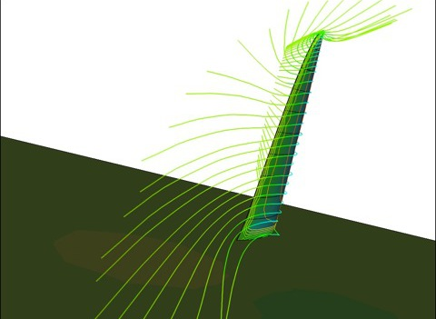

Loheed Technologies Evaluates Caedium for Marine Applications
Richard Loheed is an accomplished marine engineer, with over 20 years of experience in the design of advanced control systems for marine vehicles. Looking to enhance the consultancy services offered by Loheed Technologies, Rick recently began evaluating Caedium Professional for marine CFD applications.
 Caedium Performing a Sail CFD Simulation: Image Courtesy of Richard Loheed
Caedium Performing a Sail CFD Simulation: Image Courtesy of Richard Loheed
Rick's initial Caedium evaluations were run on various geometries in salt water by modifying Caedium's built in fresh water properties. Then as an avid sailor, he decided to focus on the air flow around a sail. He created the geometry in Rhino, using Grasshopper to parametrically design the appropriate twist in the sail:
"Sails must be twisted because the wind grows a substantial boundary layer on the surface, making the winds aloft higher than that near the surface. Resolution of the 'Apparent wind' created by the sailboat's forward motion and this velocity gradient drives the need for twist."
He imported the geometry into Caedium using STEP (.stp) and used Caedium's double-sided face capabilities to construct a flow volume around the sail. After configuring the boundary conditions he was able to run the CFD simulation. In short order Rick was examining the results:
"I have added streamlines before - I've completed all your tutorials! I like the cleanliness of using an edge [as a streamline seed] like this for a foil or sail. Despite the shorter length available for the boundary layer over the 'floor' surface in my small flow volume, the velocity gradient up the 'mast' was remarkably similar to that predicted by the 'wind power law'. This is quite significant - it shows with the selection of the right boundary conditions and flow volumes, the sail problem can be resolved very accurately."
Caedium Sail Upstream: Image Courtesy of Richard Loheed
Rick also voiced support for Caedium's integrated simulation environment for CFD:
"I note you are using OpenFOAM which I also downloaded - but it's too convoluted for my available time. I also have TetrUSS but Caedium is a welcome GUI, giving me the freedom to analyze very rapidly using RANS with virtually anything I can cook up in Rhino or SolidWorks. Brilliant."
Caedium Sail Downstream: Image Courtesy of Richard Loheed
With Rick's initial success in using Caedium, he says "I am sold - and completely certain it has already enhanced my consultancy services, adding the ability to perform advanced CFD capabilities for future client projects with radically shorter turnaround times."
Feedback
Questions? Ideas? Problems?

Comments
CFD
Really great case study.
Great to see this kind of CFD work going on in the marine industry.